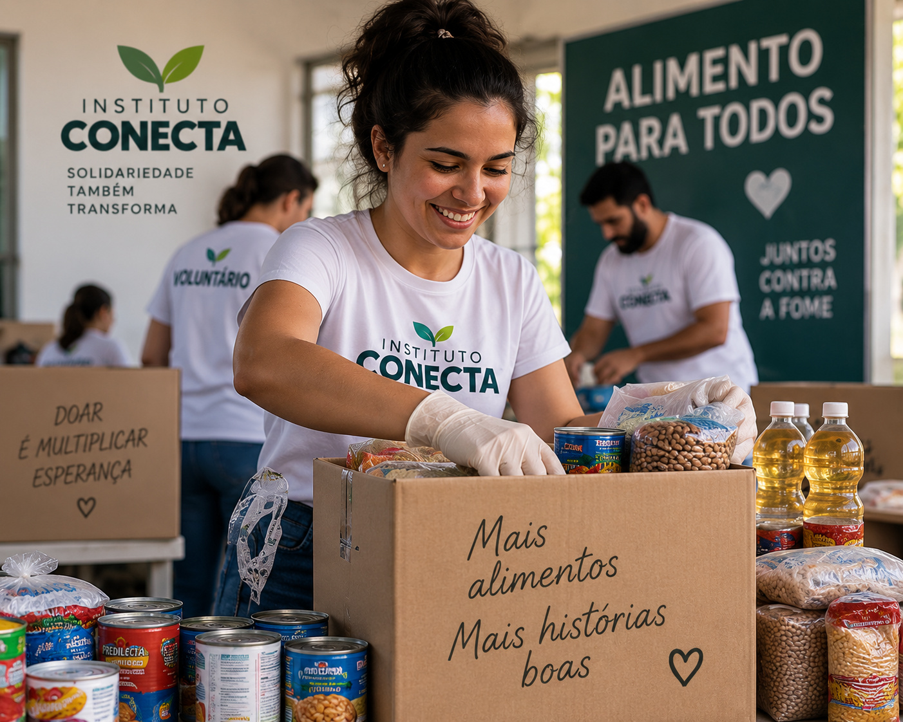
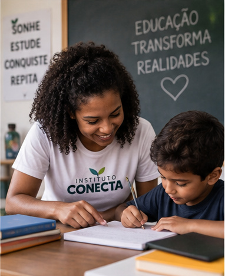
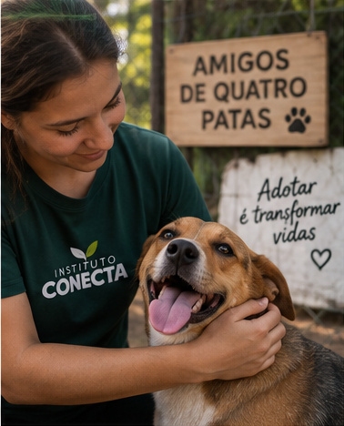

Nossos projetos
Conheça algumas iniciativas desenvolvidas pelo Instituto Conecta e
descubra como participar.
Alimentação
Alimento para Todos

Campanha Alimento para Todos
O projeto arrecada e distribui alimentos para famílias em situação
de vulnerabilidade.
Como participar
Você pode colaborar com campanhas de arrecadação de alimentos e
apoiar ações de distribuição.
Quero ser voluntário
Educação
Educação que Transforma

Projeto Educação que Transforma
Oferecemos reforço escolar, inclusão digital e atividades de
capacitação profissional.
Como participar
Você pode contribuir com atividades educacionais, reforço escolar e
ações de inclusão digital.
Quero ser voluntário
Proteção animal
Amigos de Quatro Patas

Projeto Amigos de Quatro Patas
Atuamos no resgate, tratamento e adoção responsável de animais.
Como participar
Você pode apoiar campanhas de proteção animal e ações de adoção
responsável.
Quero ser voluntário